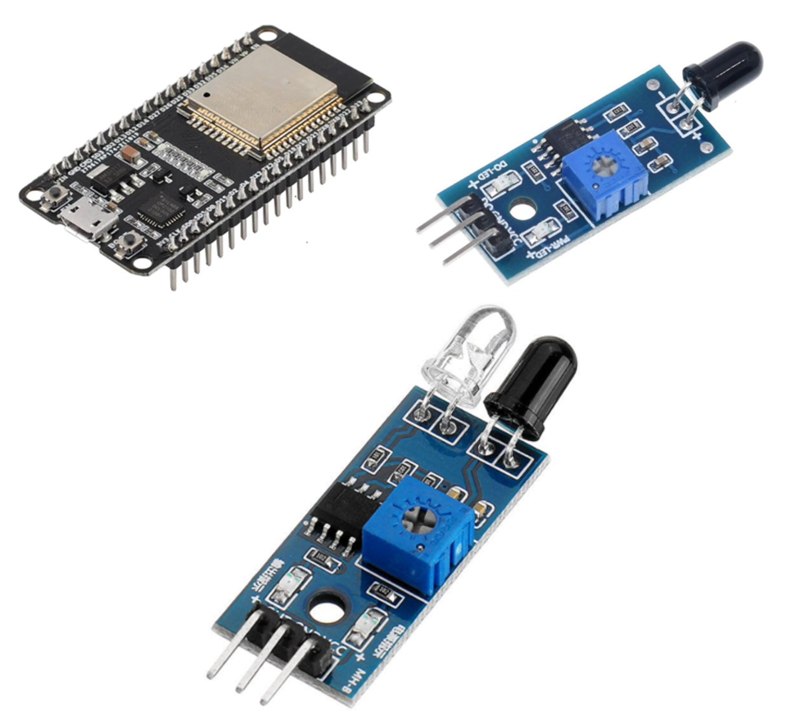
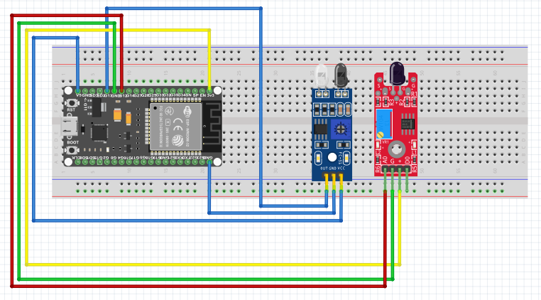

Hey everyone, welcome to my home safety DIY project! I'm thrilled to share how I've enhanced my creation with a Flame Sensor for fire detection and an IR Sensor at the door to keep an eye on entries. Let me walk you through it! With the Flame Sensor, my project becomes a vigilant guardian against potential fire hazards. Whether I'm at home or away, the sensor intelligently detects any signs of fire, ensuring a quick and automated response to keep my surroundings safe. It's a crucial addition to my home safety features. Now, let's talk about the IR Sensor at the door. This sensor adds an extra layer of security by monitoring any entries. If someone approaches the door, the IR sensor detects their presence, providing an extra layer of awareness and security. It's like having a virtual watchman for my home! The integration process was seamless. I carefully incorporated the Flame Sensor into my setup to ensure it covers areas susceptible to fire risks. Additionally, the IR Sensor is strategically placed at the entrance, allowing it to effectively monitor movements. Tweaking the software to handle communication with both sensors ensures a smooth and intelligent response. This home safety project is now a comprehensive solution, blending fire detection and intrusion monitoring seamlessly. The flexibility of this DIY setup empowers me to tailor my safety features according to my unique needs, making it an ideal addition to my home. Join me in this journey where DIY electronics meet practical safety solutions. I'm creating a project that aligns perfectly with my vision of a secure home, leveraging the power of flame detection and intelligent entry monitoring to enhance the safety of my living space.
Step 1: Gather Components
1. ESP32 Dev Module
The heart of my project, enabling wireless communication for the enhanced DIY home safety system.
2. Flame Sensor
Critical for detecting potential fire hazards, receiving UHF ASK demodulated signals. Supports ASK and OOK modulation, essential for real-time signal analysis.
3. IR Sensor
Empowers the system with RFID capabilities, facilitating contactless identification at the door. Enables seamless interaction with RFID-enabled systems for enhanced security.
4. Other Components
- USB connectors for charging and power supply.
- Jumper cables for connecting components.
Step 2: Circuit Design and Assembly
In this next phase of my home safety project, I'm getting down to the details of setting up the electronic circuit. Starting with a clear plan—called a schematic—I'm outlining how each component connects. Thinking about things like power, data lines, and pin specifics. Once I've got that roadmap, I'm placing the components on a board, making sure it's neat and organized for efficient use of space. This step focuses on the hassle-free assembly of the circuit components, ensuring simplicity and ease of setup for a reliable home safety system.